Scholar
Registers with a one-time portal key, files the proposal, uploads milestone documents and always sees the next step.
Case study · Web application
Scholar Track guides a research scholar through four Doctoral Committee reviews and a degree stage, with a two-step approval at every milestone. One portal, three roles, a full audit trail, and an interface that reads like a well-set journal.
Overview
The portal replaces paper files and email threads with a single source of truth. Every transition is enforced on the server, every rejection carries remarks, and every step writes an audit row. Scholars always know what to do next; supervisors and the R&D section always know what is waiting for them.
Three roles
Registers with a one-time portal key, files the proposal, uploads milestone documents and always sees the next step.
Constitutes the Doctoral Committee, assigns a co-supervisor and approves or returns each application with remarks.
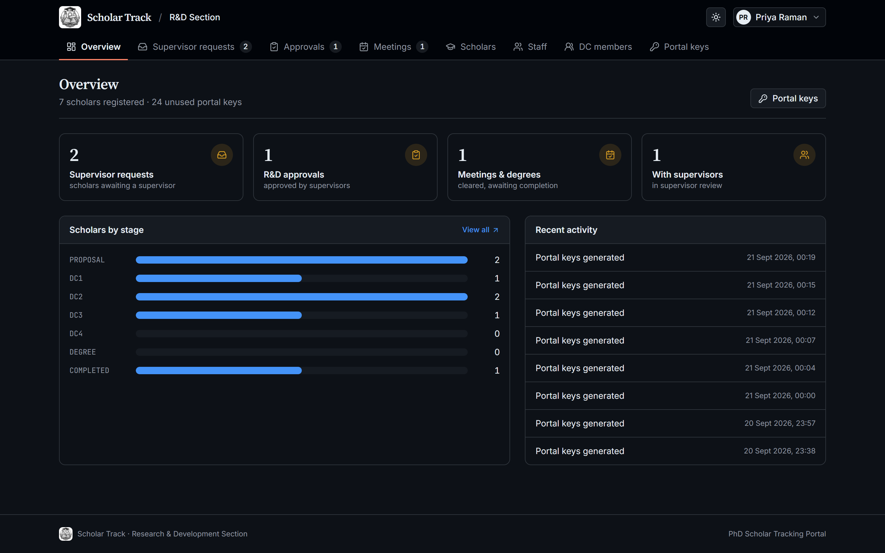
Issues portal keys, allocates supervisors, gives the final approval, records meetings and issues the degree.
Workflow
DRAFT → SUBMITTED → SUPERVISOR_APPROVED → RND_APPROVED → MEETING_COMPLETED
Each stage lists exactly which documents are required. Uploads go straight to object storage through short-lived signed URLs, with progress, and the application cannot be submitted until every slot is filled.
The scholar page puts the proposal, committee, documents and the decision form on one screen. Returning an application requires remarks, which land in the scholar's tracker and inbox.
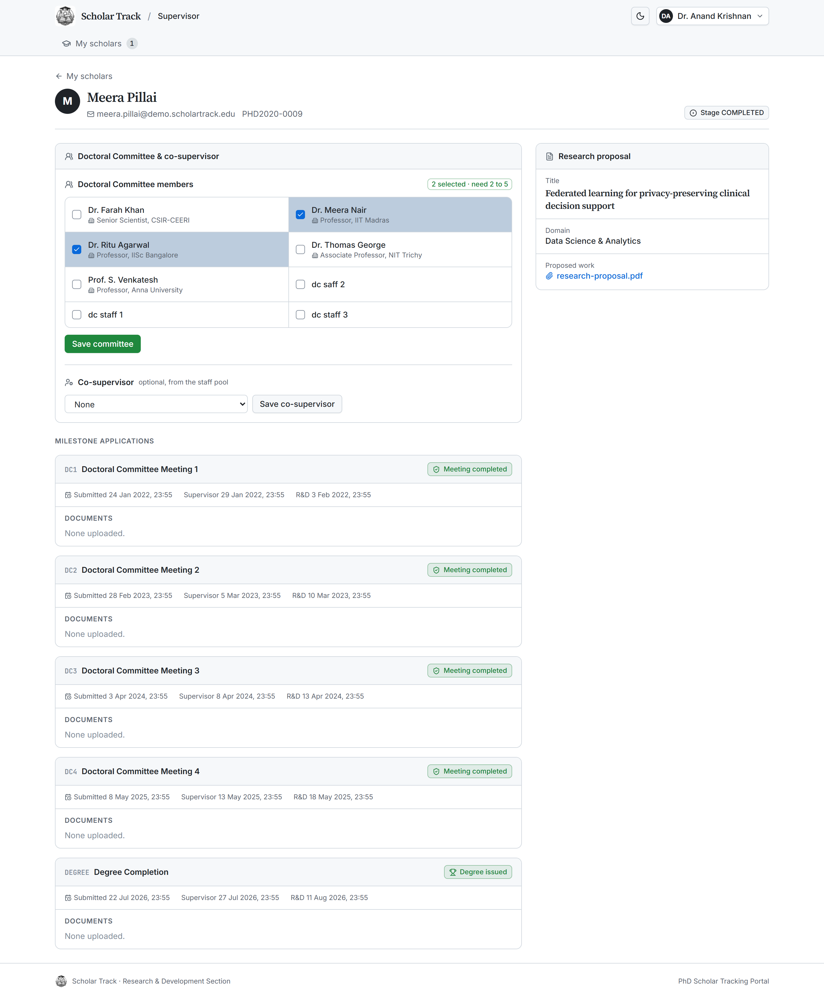
Queues with live counters show what is waiting: supervisor requests, final approvals, and meetings to record. Marking a meeting complete unlocks the next stage; on the last stage it issues the degree.
The scholar's overview turns fully green, the completion record shows the issue date, and the final email congratulates the new doctor.
Design system
A GitHub-inspired system: hairline borders, quiet surfaces, one accent, semantic state colours. Serif headings give it an academic voice. Drag the handle to compare.
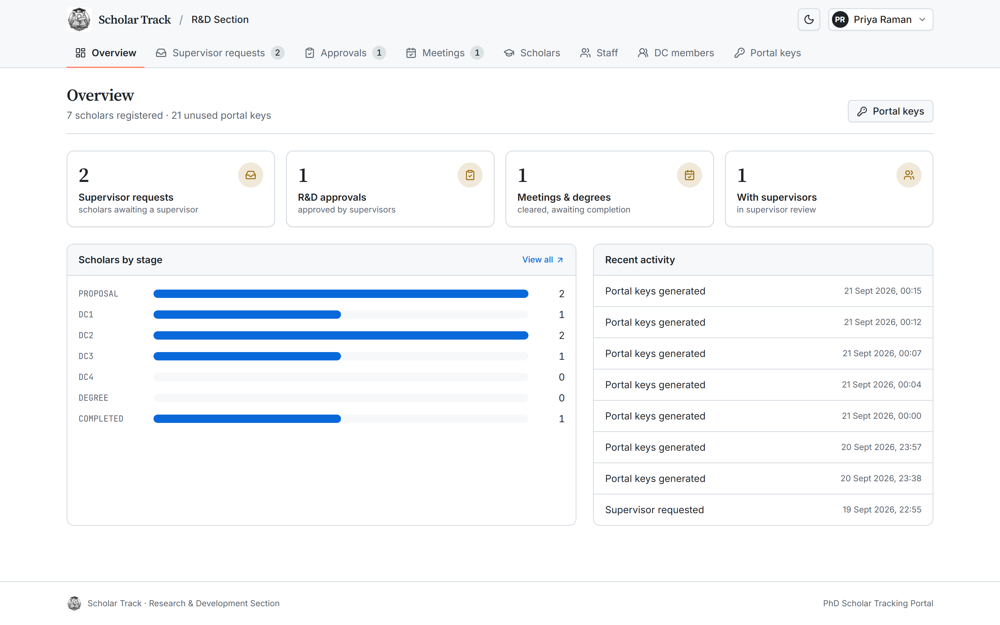
Light DarkResponsive
Tabs scroll, tables stack, and the full journey stays readable one-handed. Hover a phone to scroll its screen.
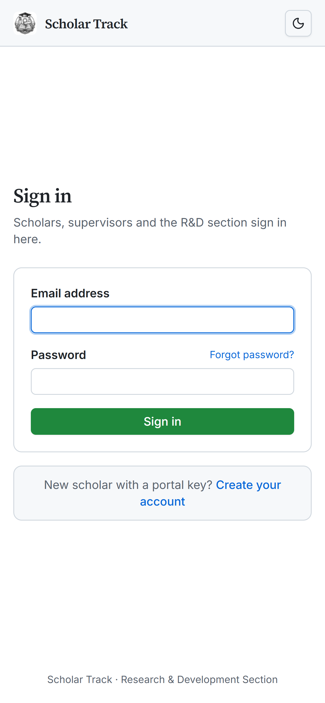
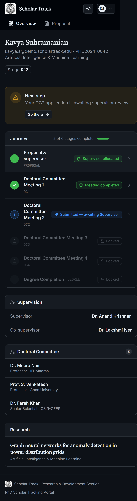
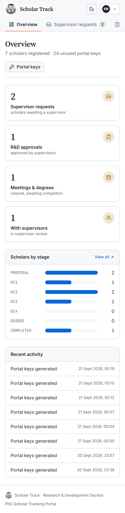
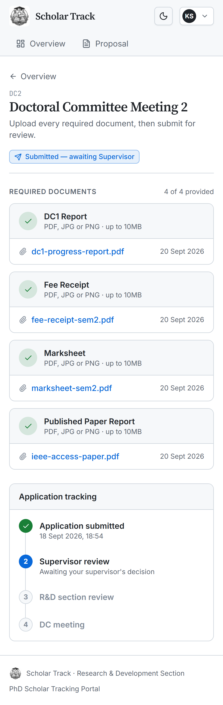
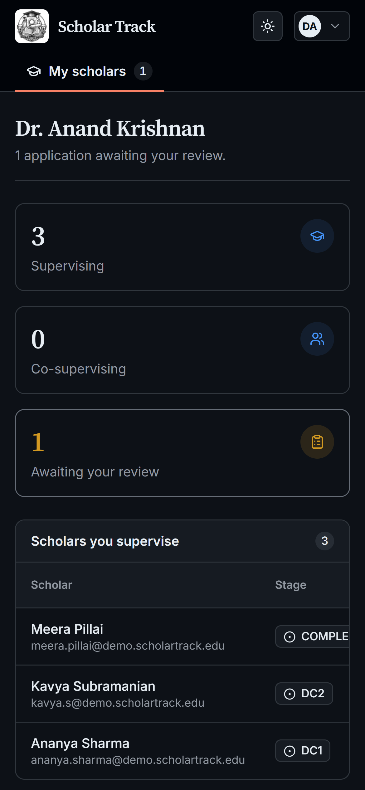
Gallery
Click any image to open it at full resolution.
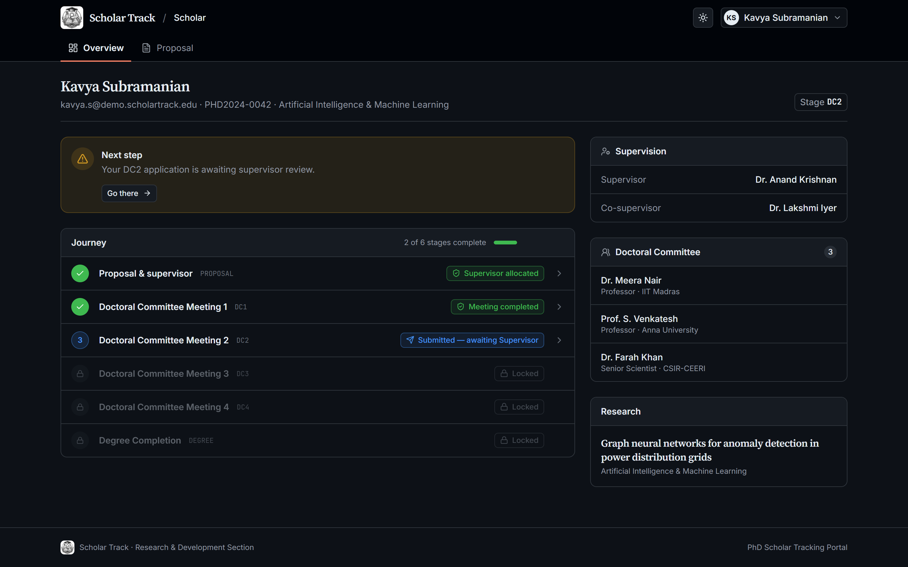
Scholar overview · dark DC2 application Degree completed Supervisor dashboard Supervisor review R&D overview · light R&D overview · dark Supervisor requests R&D approvals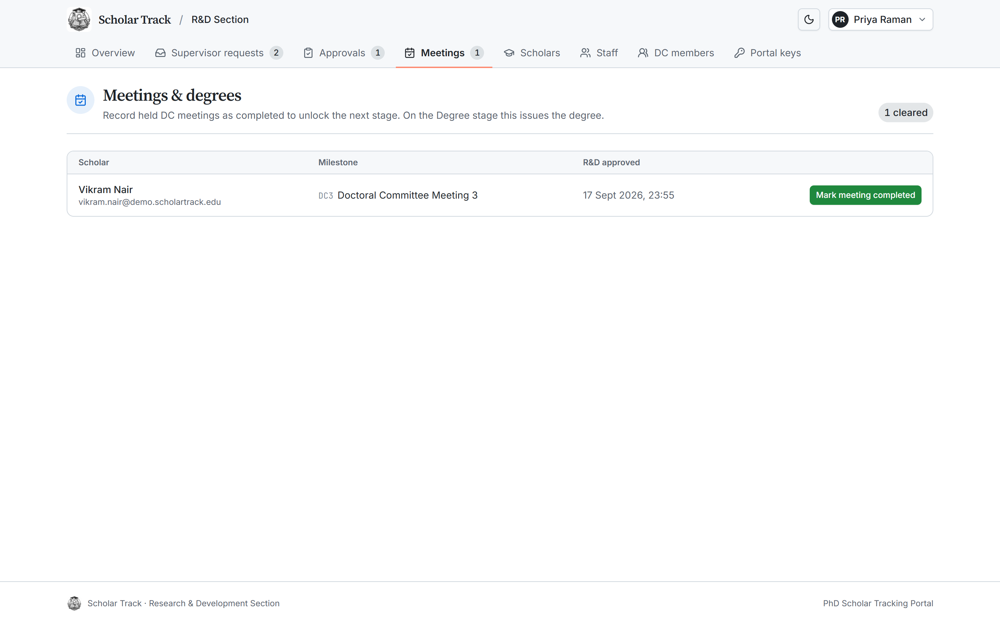
Meetings & degrees Scholar register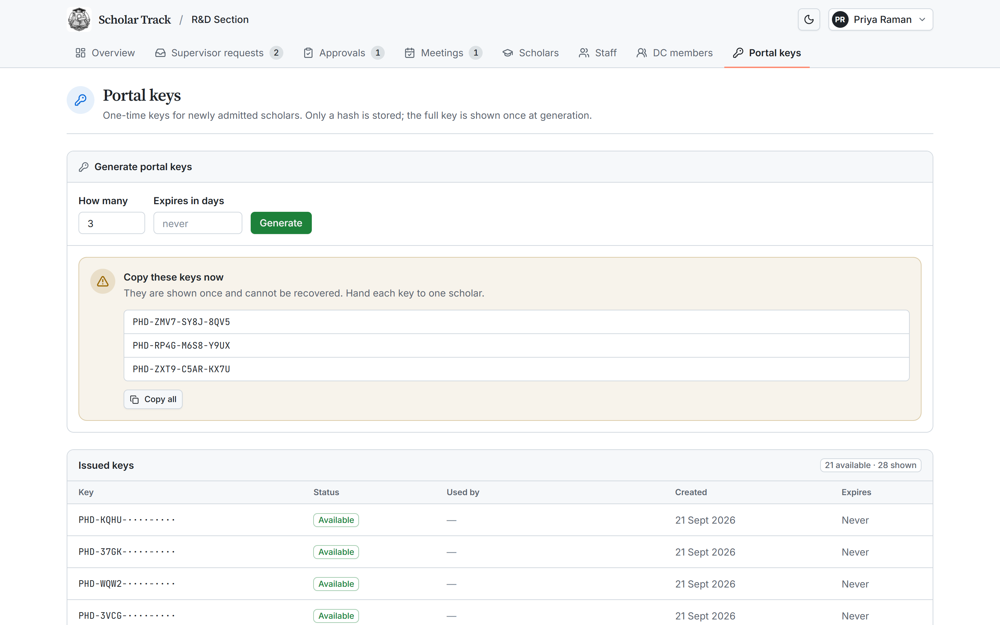
Portal keys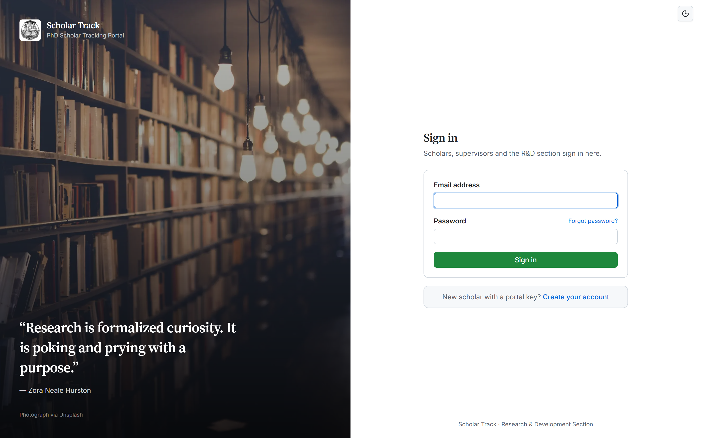
Sign in · light Forgot password · dark Sign in · dark · 4KUnder the hood
{kind=link}
{kind=link}
{kind=link}
{kind=link}
{kind=link}
{kind=link}
{kind=link}
{kind=link}
{kind=link}
{kind=link}
{kind=link}
{kind=link}
{kind=link}
{kind=link}
{kind=link}
{kind=link}